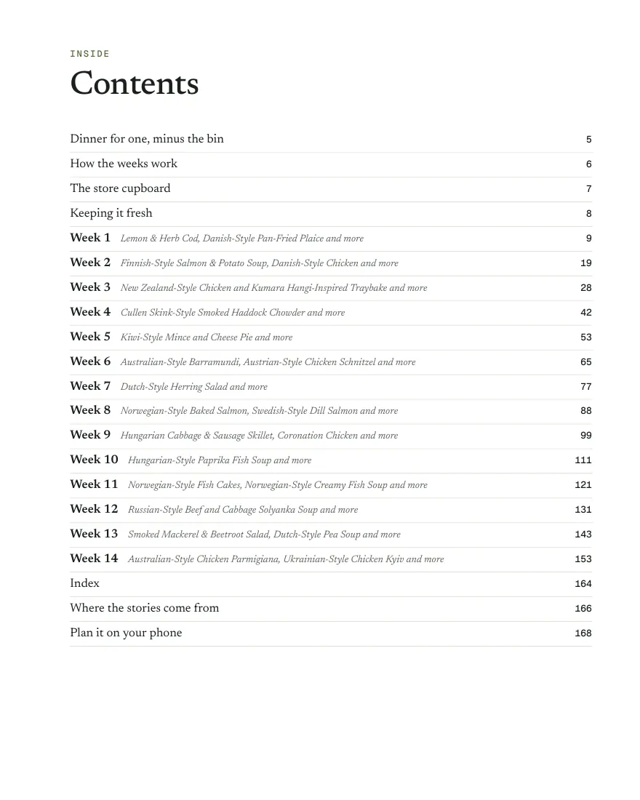
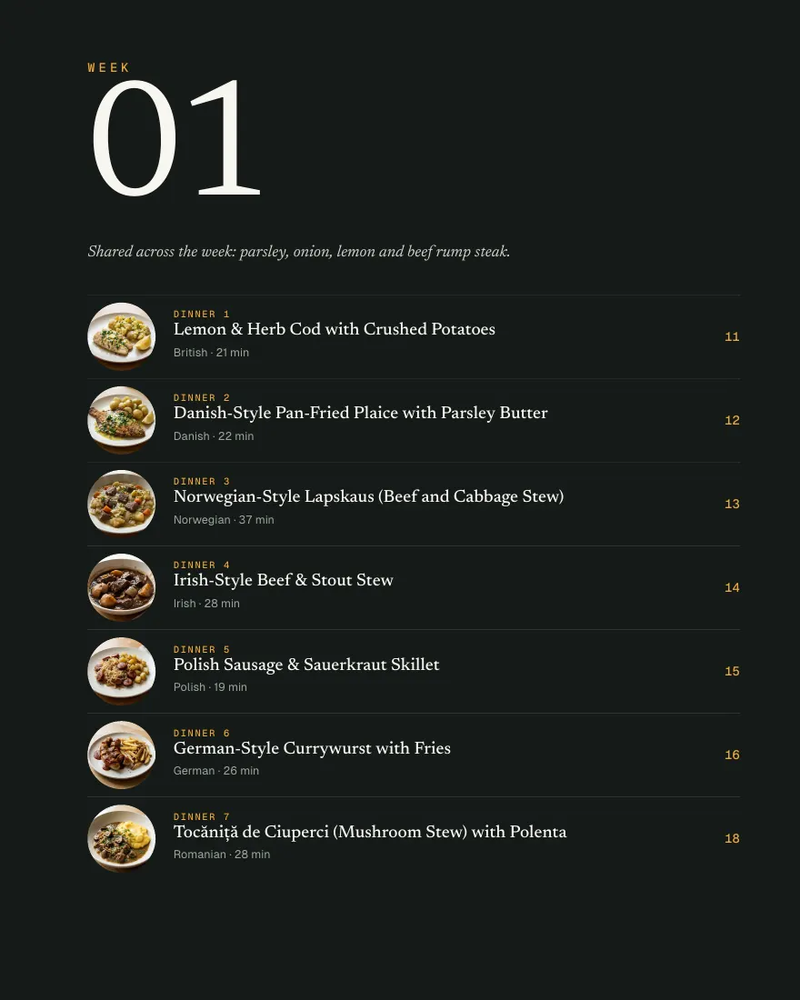
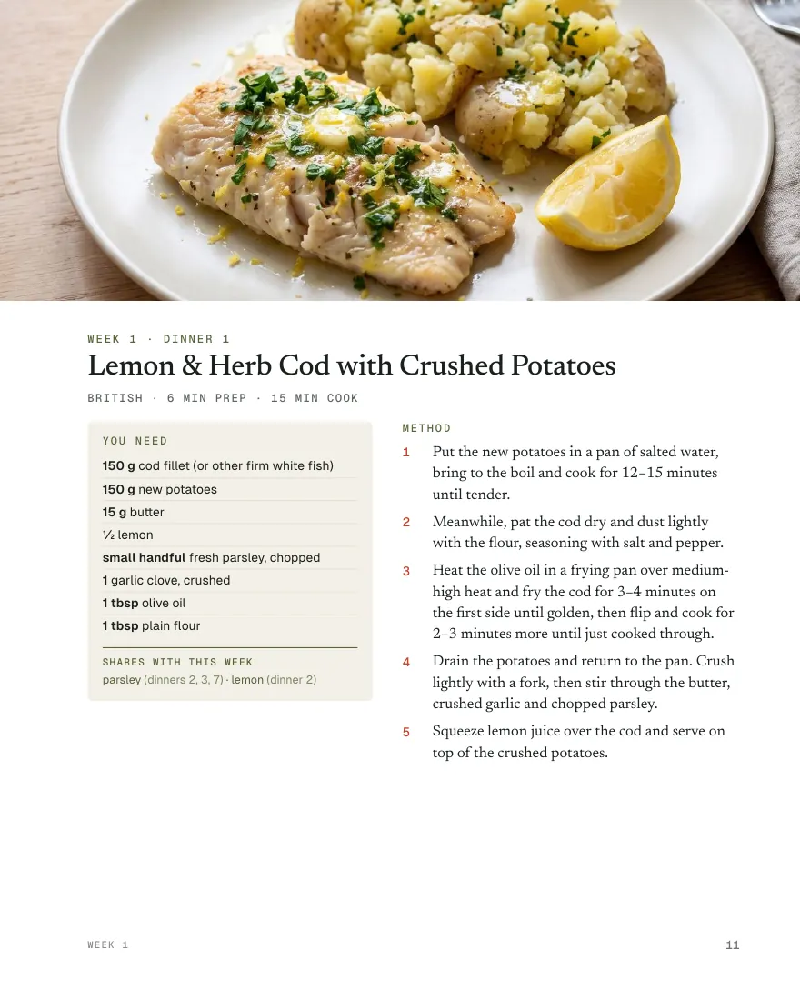
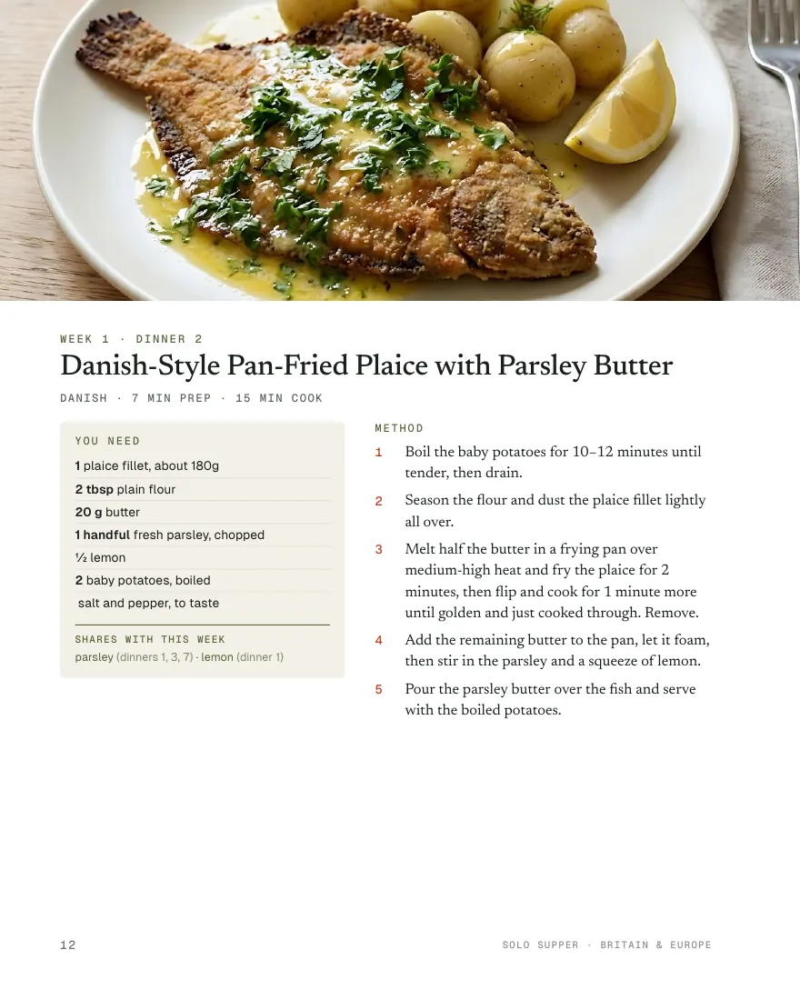

Every recipe measured for one, and planned into weeks that share their ingredients, so the coconut milk you open on Monday gets finished on Thursday. Each week has its shopping list, what will be left over and what to do with it, and a photo of every dish.
The PDF downloads straight after payment, so the 14-day right to cancel ends once you download it.

Contents

A week of dinners

Every dish photographed

Measured for one
Solo Supper Pro
The PDFs come with Pro
Subscribe yearly and all four PDFs are yours. Subscribe monthly and you get Asia. They're added to your account as soon as your first payment goes through, and they stay yours even if you cancel. (The free trial doesn't include them.)
Your books are in Settings in the planner, under Your books.
Every recipe free
All the recipes are on this site and in the planner either way.
Good to know
What do I get? A PDF of the whole book, with every photo, to read on a tablet, phone or computer, or to print the pages you want.
How does the download work? Straight after paying you land on a page with your download. If you sign in to Solo Supper with the same email, the book is kept in your account too.
Refunds. Because the PDF downloads straight away, the usual 14-day right to cancel ends once you download it. If something's wrong with the file, email hello@solosupper.co.uk and I'll sort it out.